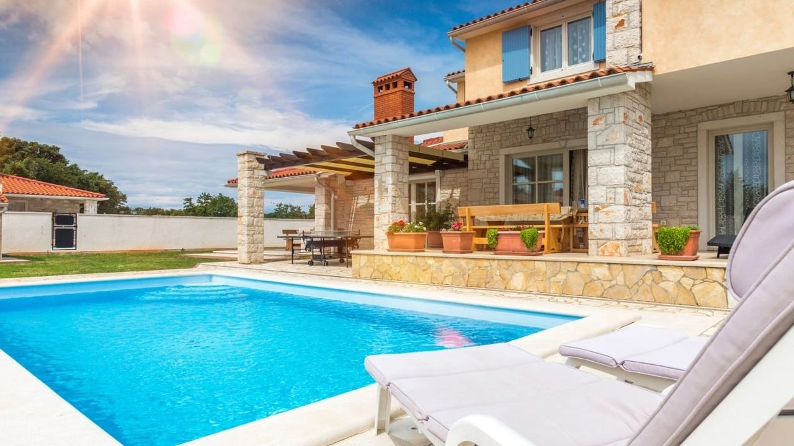
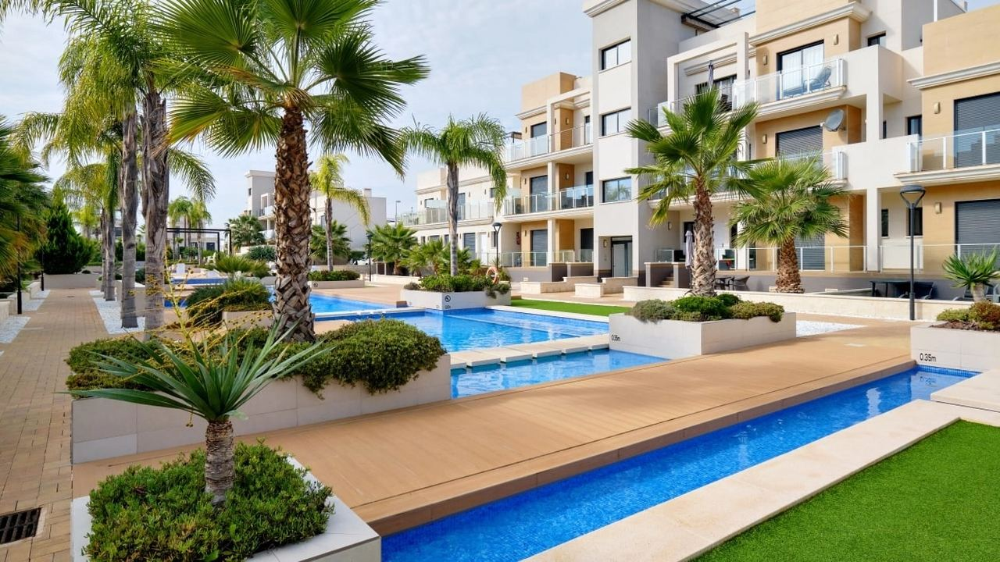
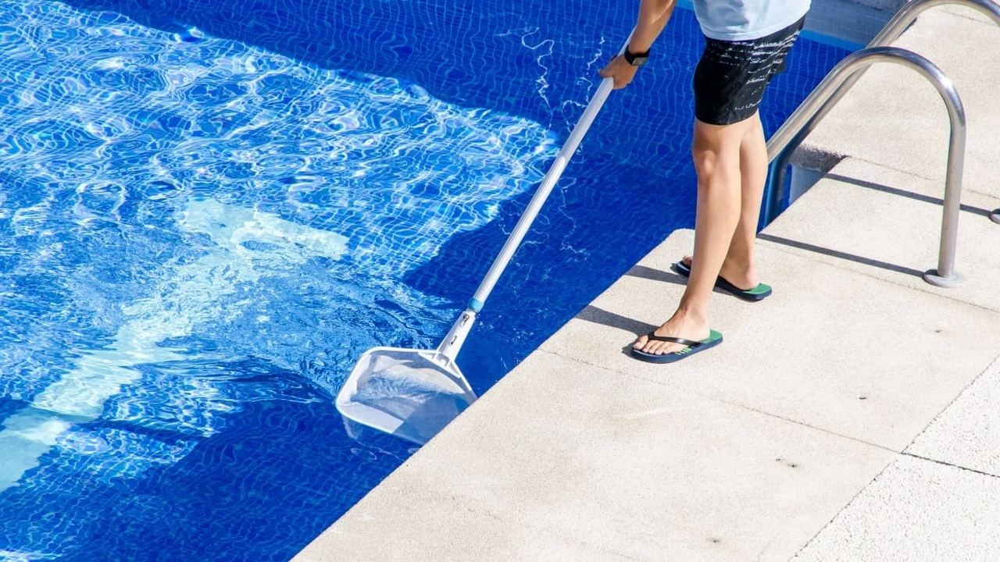
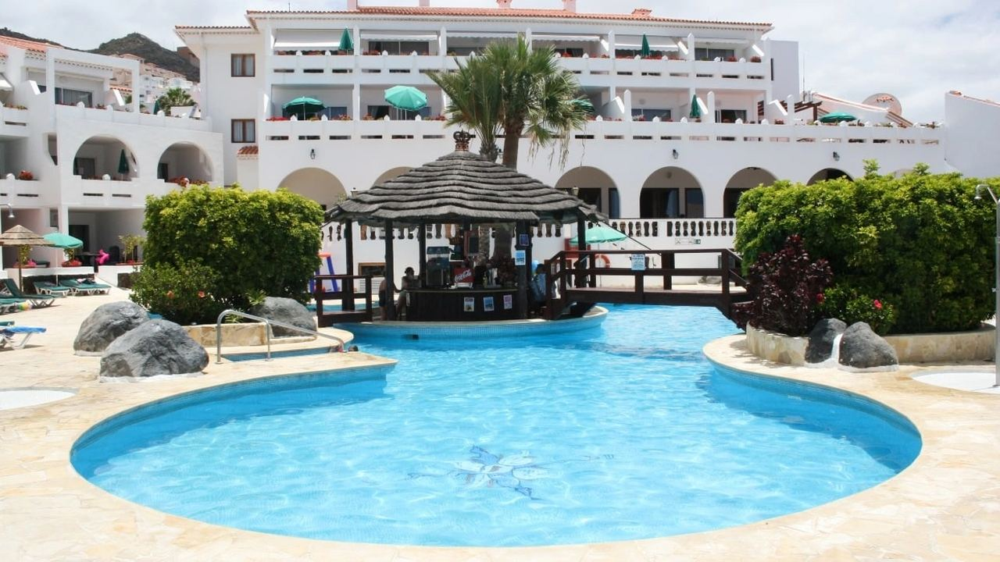

Comprar en España · Guía práctica
Comprar una vivienda con piscina en España
 Por Aleksandra Kobus · · actualizado · 5 min de lectura
Por Aleksandra Kobus · · actualizado · 5 min de lectura

En resumen: En la Costa Blanca y la Costa del Sol la piscina se puede usar seis meses o más al año, y es una de las características que más piden compradores y huéspedes. Puede elegir una piscina privada, que controla y paga usted, o una comunitaria, cuyos gastos se reparten a través de la cuota de comunidad. Una piscina privada suele costar entre unos 1.000 y 3.000 € al año, según el tamaño, la climatización y si contrata un servicio de mantenimiento. Una piscina de obra necesita licencia municipal y debe estar declarada en el Catastro, lo que sube el valor catastral y el IBI. Antes de comprar, compruebe que es legal y está declarada, y pruebe la bomba, el filtro y la climatización.
Una piscina cambia la forma de vivir una casa en España. También cambia lo que cuesta mantenerla, lo que conviene revisar antes de comprar y lo fácil que resulta alquilarla. Esto es lo que contamos a nuestros propios compradores.
¿Merece la pena pagar por una piscina?
Para la mayoría de compradores en la costa, sí. En una vivienda vacacional la piscina suele ser el primer filtro de los huéspedes en las plataformas de reserva, y las viviendas con piscina se alquilan más semanas y a mejor precio. Al vender, llega a más compradores, sobre todo en chalets.
No siempre es la mejor opción. Una piscina privada supone gastos y trabajo todo el año, también los meses en que usted no está. Si solo va a pasar unas semanas al año en la costa y no piensa alquilar, un piso con una piscina comunitaria bien gestionada le da casi todo el disfrute con mucho menos esfuerzo.
Piscina privada o comunitaria

- Piscina privada: habitual en chalets y en algunos adosados y bajos. Total privacidad y control, pero usted paga todos los gastos y organiza el mantenimiento.
- Piscina comunitaria: habitual en residenciales y urbanizaciones cerradas. El mantenimiento, la limpieza, el seguro y, cuando es obligatorio, el socorrista se pagan con la cuota de comunidad, así que el coste por propietario es bajo. La comunidad fija la temporada, el horario y las normas.
Al comparar piscinas comunitarias, fíjese en la cuota, lo que incluye y cómo se cuida la piscina. Nuestra guía sobre la comunidad de propietarios explica cómo funcionan las cuotas y las normas.
Cuánto cuesta mantener una piscina privada

Rangos habituales para una piscina media de chalet (unos 8 × 4 m) en la costa. Sus cifras dependerán del tamaño, el equipo, la duración de la temporada y los precios de la zona.
| Gasto | Habitual al año |
|---|---|
| Productos químicos (cloro o sal, pH) | 150 – 500 € |
| Electricidad de bomba y depuradora | 300 – 700 € |
| Agua para rellenar | 100 – 300 € |
| Servicio de mantenimiento (semanal en temporada) | 900 – 1.800 € |
| Reparaciones y piezas (bomba, célula de sal, arena del filtro) | 100 – 500 € de media |
Una bomba de calor u otra climatización sube bastante la factura de la luz, pero alarga la temporada a primavera y otoño. La cloración salina gasta menos productos, aunque su célula hay que cambiarla cada pocos años. La piscina también aumenta el valor catastral, por lo que el IBI anual es algo más alto.
Licencia, Catastro y normas sanitarias

Licencia. Construir una piscina requiere autorización del ayuntamiento, licencia de obra o declaración responsable según el municipio. Una piscina hecha sin ella puede ser una infracción urbanística, y legalizarla después exige un proyecto técnico y tasas.
Catastro. La piscina de obra debe declararse al Catastro, que actualiza el valor catastral y con él el IBI. El Catastro detecta piscinas no declaradas con imágenes aéreas y de satélite y las regulariza, con tasa y liquidación de los años atrasados. Revise la consulta descriptiva y gráfica de la vivienda: si la piscina no aparece, pida al vendedor que lo resuelva antes de la escritura.
Normas sanitarias. El Real Decreto 742/2013 fija los criterios de calidad del agua y seguridad de las piscinas de uso colectivo, incluidas las comunitarias. Las comunidades autónomas añaden sus propias normas, por ejemplo sobre socorristas, carteles e inspecciones. En la Comunitat Valenciana y Andalucía afectan sobre todo a las piscinas comunitarias, y la responsable es la comunidad, no cada propietario. A la piscina privada de una vivienda unifamiliar el decreto solo se aplica en parte, pero usted responde si alguien sufre un daño, así que manténgala limpia y segura y tenga un seguro de responsabilidad civil.
Restricciones de agua. En épocas de sequía algunos municipios limitan el llenado de piscinas privadas. Infórmese en su ayuntamiento y valore una cubierta para reducir la evaporación.
Alquiler vacacional. Si alquila, la piscina debe ser segura para los huéspedes y su seguro debe cubrir la responsabilidad frente a ellos. Las normas del alquiler turístico están en nuestra guía sobre alquileres de corta duración.
Qué revisar al visitar una vivienda con piscina
- Situación legal: licencia de la piscina y que figure en el Catastro y en la descripción de la finca.
- Sol: cuántas horas de sol recibe en primavera y otoño, no solo al mediodía en verano.
- Estado: grietas, azulejos sueltos, fugas (pregunte por las facturas de agua), antigüedad de la bomba, el filtro y la célula de sal o la bomba de calor.
- Tratamiento del agua: cloro o sal, dosificación automática, iluminación.
- Seguridad: profundidad, escalones o zona poco profunda, valla o cubierta si la usarán niños.
- Piscinas comunitarias: temporada y horario, normas para invitados e inquilinos y el gasto de mantenimiento en las últimas cuentas.
Si no va a estar todo el año, conviene contratar desde el principio un servicio de piscina y a alguien que cuide la vivienda.
Preguntas frecuentes
¿Cuánto cuesta mantener una piscina privada en España?
Para una piscina media de chalet, en total unos 1.000 a 3.000 € al año entre productos, electricidad, agua, servicio de mantenimiento y pequeñas reparaciones. La climatización lo encarece.
¿La piscina sube el IBI?
Sí. La piscina de obra forma parte del valor catastral de la vivienda y el IBI se calcula sobre ese valor, así que el recibo anual sube algo.
¿Qué pasa si la piscina no está declarada en el Catastro?
El propietario debe declararla. El Catastro también detecta piscinas no declaradas con imágenes aéreas y las regulariza con tasa y liquidación de atrasos. Al comprar, pida al vendedor que la regularice antes de la escritura.
¿Una piscina comunitaria necesita socorrista?
Depende de la normativa autonómica y del tamaño y uso de la piscina. Cuando es obligatorio, la comunidad lo contrata y lo paga a través de las cuotas.
¿Hace falta piscina para alquilar una vivienda vacacional?
No es obligatoria, pero en la costa influye mucho en la demanda y el precio, sobre todo en chalets y estancias familiares.
Encuentre la vivienda con la piscina adecuada
Díganos si prefiere piscina privada o una comunitaria bien cuidada: le preparamos una selección en la Costa Blanca y la Costa del Sol y revisamos la documentación de la piscina antes de que se comprometa. Contacte con nosotros o lea la guía para comprar un chalet.
Fuentes: BOE – Royal Decree 742/2013 on technical and health criteria for swimming pools · Junta de Andalucía – swimming pool rules (Decree 485/2019) · Sede Electrónica del Catastro – declaring new constructions